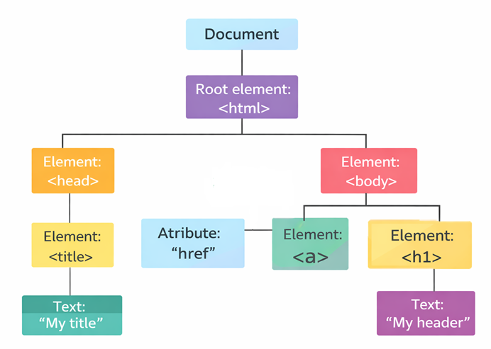
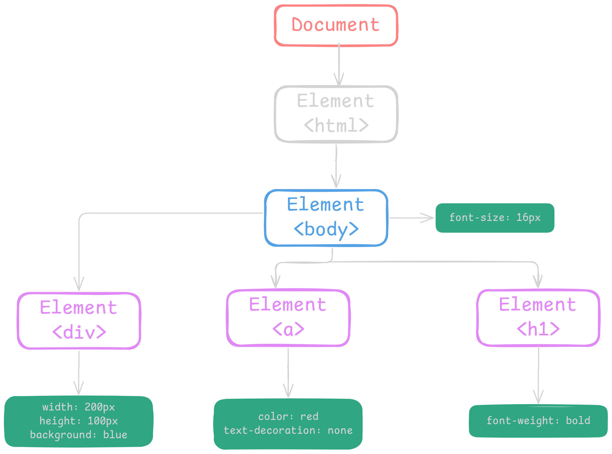

O que é o CSSOM? Assim como a DOM, o CSSOM é uma estrutura de dados hierárquica, mas sua função é representar o CSS de um documento web. O CSSOM é gerado pelos navegadores após o carregamento e processamento dos arquivos de estilo. Embora seja construído separadamente da DOM, ambos trabalham em conjunto para que o navegador possa montar a página com a estrutura correta (DOM) e aplicar os estilos apropriados (CSSOM). A principal função do CSSOM é fornecer ao navegador um "mapa" detalhado dos estilos que devem ser aplicados a cada elemento da página.
- Conversão (Bytes -> Caracteres) O navegador recebe os bytes brutos do arquivo HTML da rede (ou disco) e os converte em caracteres, baseando-se na codificação definida (geralmente UTF-8)
- Tokenização (Caracteres -> Tokens) O navegador transforma a cadeia de caracteres em tokens definidos pelo padrão HTML5 (ex: html, body, p, tags de fechamento, etc.). Os tokens funcionam como unidades semânticas de marcação.
- Lexing (Tokens -> Objetos/Nós) Os tokens são convertidos em "nós" (objetos no JavaScript). Cada nó representa um elemento HTML, um atributo ou um pedaço de texto

-
O navegador transforma o CSS numa estrutura de regras organizada, chamada CSSOM tree.
- O navegador combina: Estrutura do DOM e Regras do CSSOM e cria a Render Tree.
- Reflow/Layout: Agora o navegador calcula: Tamanho, Posição, Margens, Padding e Bordas.
- Paint: Depois do layout, o navegador pinta: Cores, Bordas, Sombras, Texto e Imagens.
- Composite: o navegador junta transform, opacity, animações, camadas GPU em camadas finais para exibir na tela.

| Aspecto | DOM | CSSOM |
|---|---|---|
| Significado | Document Object Model | CSS Object Model |
| Origem | HTML | CSS |
| Função | Representa a estrutura do documento | Representa as regras de estilo aplicadas |
| Formato | Árvore de nós (elementos HTML) | Árvore de regras de estilo |
| Manipulação via JavaScript | document.querySelector(), createElement() | element.style, getComputedStyle() |
| Participa da Render Tree? | Sim | Sim |
| Impacto na performance | Alterações podem causar Reflow ou Repaint | Alterações podem causar Reflow ou Repaint |